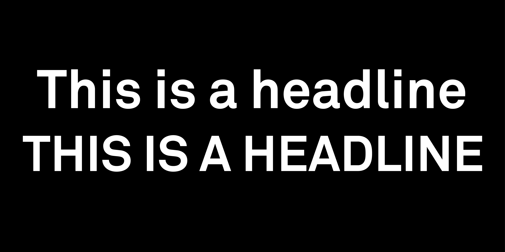
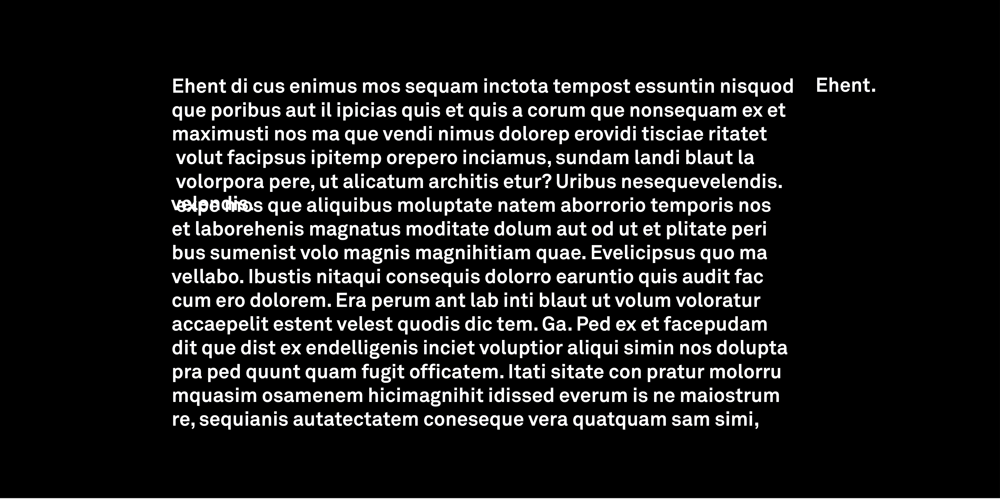
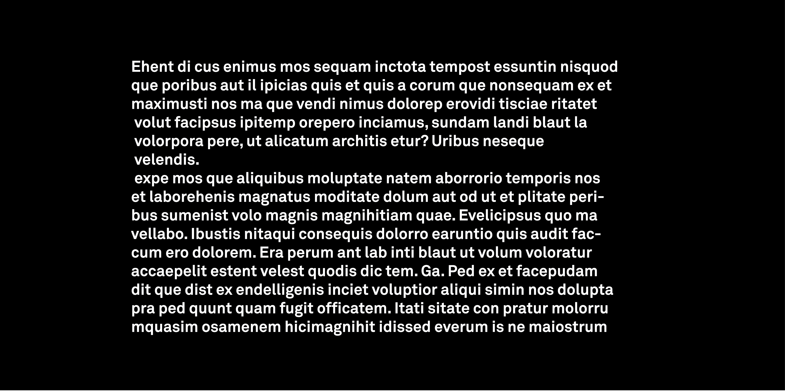
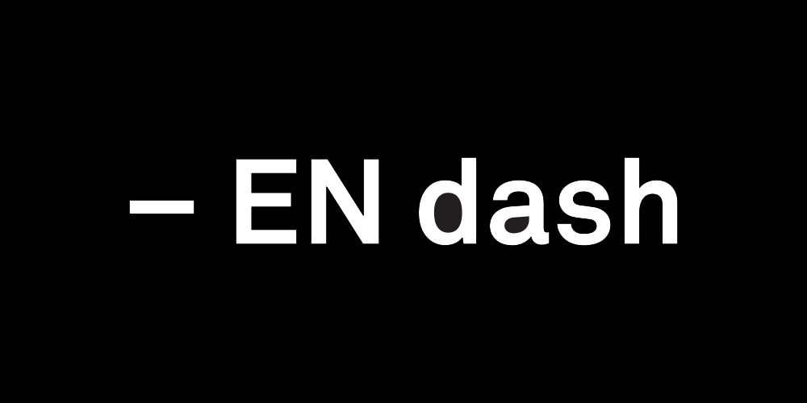

Perhaps typography doesn’t have to be taught. Just maybe, all those courses that attempt to instil the canons of typographic design aren’t necessary.
If you think about it, the craft of typography is a little more than the combination of three very simple things: attention to detail, common sense and visual acuity. Sure, there are typographic rules and guidelines, but they are, for the most part, just based on what is sensible and pleasing to the eye. Learning to identify the may increase a designer’s business vocabulary, and knowing the lineage of modern Garamond designs may aid in the choosing of a good modern revival of the face, but the real key to typographic success is basically “sweating the details” and a simple coordination of mind and eye.
Take, for instance, the typographic rule of avoiding all-cap headlines. It’s one of the first typographic rules of an educator’s hit lists. It’s also one of the first rules professional graphic designers break. The tenet about not setting all capitals, however is really based on little more than simple logic. Capital letters take up more space than lowercase letters—up to 30 percent more space. Headlines, subheads, and pull-quotes are about setting brief blocks of copy in a relatively small space. It’s only common sense to use the most space-efficient letters: lowercase. Sure, there’s all that stuff about “word shapes” (made from ascending, descending and x-height lowercase letters) help us read faster and how all capitals only create rectangles as visual identifiers, but just the fact that the little letters can pack more information than capitals into a given piece of design real estate ought to be enough reason to rely on them.

Correcting typographic widows and orphans is also just about making things look right, as is the rule about not cluttering the right edge of a column with a bunch of hyphens. Keeping word spacing tight and even is simply creating an inviting block of copy that does not have visually disrupting white-space gaps that also slow down the reading process. Common sense and what looks good even apply to the basic issue of choosing the correct typeface. Some typefaces are better in one size than in another. One may be bad for lengthy text in a book or brochure, but good for short blocks or promotional copy. The best typeface for a particular occasion can depend upon its size, weight, or its position on the page. The best typefaces, however are always those that are most appropriate for the time, the reader, and the situation. Rules don’t provide the answers here. All one has to do to make the correct choice is to look at the design and think about how it will be used.
If it looks right, it probably is.


Oh, it helps to know when to use an em-dash instead of an en-dash, or that “smart quotes” are preferable to foot and inch marks, but so much of what it takes to create good typography is just paying attention to the type.

Look at the headline after it has been set? Does it space well? Is it easy to read? Does it lead naturally into the text copy that follows? If there are more than two lines of copy, does the line spacing look even? Is the message enhanced by the typeface? Is the text copy inviting? Is it an even texture? If columns are set rag-right, do all the lines end in about the same place? If they are justified, is the copy block free from ribbons of white running through it? Are the lines short enough, and is there enough line spacing so the reader won’t read the same line twice? All are simple questions to answer — if the designer looks at the type, uses a little common sense, and sweats the details.
Okay, Typography probably should continue to be taught. An appreciation and understanding of the basis of good typography is a strong foundation to build on. But all the typographic education in the world is of little value if designers do not use a little common sense and look at the work they produce. The job is not done when the headline is dropped into the layout or the text copy is poured into a column. It is only complete when the designer has looked at the finished product — really looked at it — and made sure the type looks correct, is handled consistently, and makes visual sense.
Points, pica, line spacing, and kerning are only the mechanics. Software applications are just tools. It takes a concentrated effort to create typography. It takes common sense and a careful eye to create communication that is inviting, makes an impact, focuses attention, organises information, and creates a mood — ultimately, giving life and personality to the printed word. It also takes the time and attention necessary to ensure that the job is done right — really right. This is what typography is all about. And that is what must also be part of any typographic curriculum.